Основы работы в After Effects: настройки, композиция, слои
На этом занятии мы познакомимся с организацией проекта, создадим композицию, разберём основные панели и слои, а затем сделаем короткую анимацию. Важно понимать, где хранятся исходники, где собирается изображение и как свойства меняются во времени.
Проект, композиция и слой
- Проект - рабочий файл After Effects с настройками, композициями и ссылками на исходные материалы.
- Композиция - сцена с заданными размерами кадра, частотой кадров и длительностью. В одном проекте может быть несколько композиций.
- Слой - элемент внутри композиции: изображение, видео, текст, фигура или вспомогательный объект. Один исходник можно использовать в нескольких слоях.
Сначала сохраните проект через File → Save As. Файл .aep обычно не содержит внутри себя все импортированные видео и изображения. Не перемещайте и не переименовывайте исходники без необходимости; при передаче проекта нужно передать и связанные файлы.
Удобно сразу организовать папки для проекта и материалов, а на панели Project разделять композиции, изображения, видео и звук. Сохранение проекта не равнозначно экспорту готового ролика.
Создание и настройки композиции
Создайте композицию через Composition → New Composition. В Windows используется Ctrl + N, в macOS Command + N. Настройки уже созданной композиции открываются через Composition → Composition Settings.
| Параметр | Значение | Что задаёт |
|---|---|---|
| Name | First_motion | Понятное название композиции |
| Width × Height | 1920 × 1080 px | Количество пикселей по горизонтали и вертикали |
| Pixel Aspect Ratio | Square Pixels, 1.0 | Квадратные пиксели для этого упражнения |
| Frame Rate | 30 fps | 30 кадров композиции в секунду |
| Duration | 00:00:05:00 | Длительность 5 секунд |
| Start Timecode | 00:00:00:00 | Начало отсчёта времени |
Это параметры нашего первого упражнения, а не универсальная настройка для всех проектов. В реальной работе размеры кадра, длительность и FPS выбирают по задаче и требованиям показа. Лучше определить их в начале; после изменения настроек уже готовую анимацию нужно проверить заново.
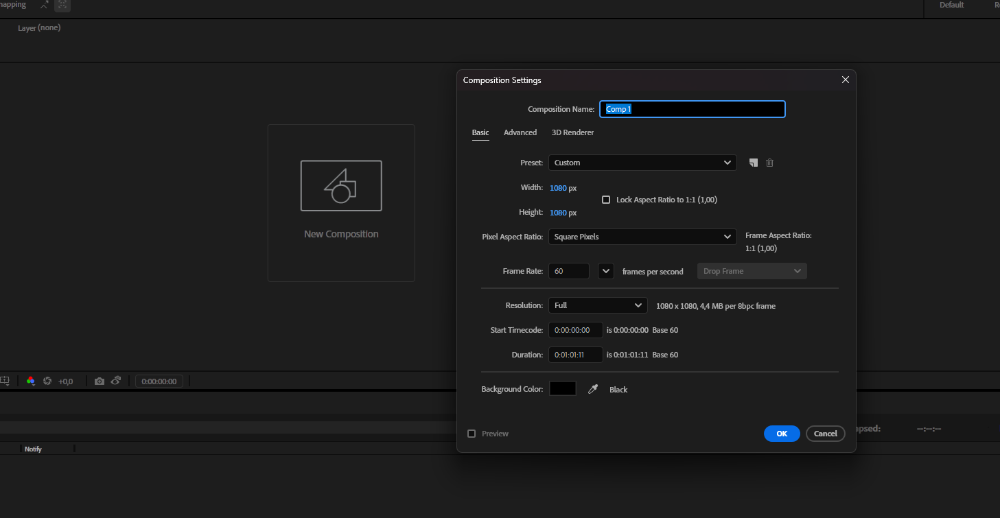
Размер кадра и частота кадров
Размер 1920 × 1080 означает 1920 пикселей по горизонтали и 1080 по вертикали. Увеличение размера кадра само по себе не добавляет деталей в маленькое исходное изображение. Масштабирование может сделать его менее чётким.
FPS задаёт количество кадров в секунду. В разных задачах встречаются 24, 25, 30, 50, 60 fps и другие значения. Большая частота даёт больше временных отсчётов, но впечатление о движении зависит также от анимации, размытия движения и устройства показа. Для работ нашего курса используем 30 fps, если в задании не указано другое.
Низкая частота смены рисунков может быть выразительным приёмом, но её не обязательно получать уменьшением FPS всей композиции. Рисунки или положения можно удерживать несколько кадров внутри композиции с выбранной частотой.
Настройки композиции и качество предпросмотра
Масштаб просмотра 50% или 100% не меняет размер готового кадра. Значения Full, Half и Quarter в панели Composition задают разрешение предпросмотра. Снижение качества просмотра облегчает работу, но само по себе не уменьшает размеры композиции.
Цвет фона в настройках композиции также не заменяет настоящий фоновый слой. Если в итоговом изображении нужен сплошной цвет, создайте слой Solid нужного цвета.
Интерфейс и рабочие панели
Расположение панелей можно менять и сохранять как рабочую среду. Если панель закрыта, найдите её в меню Window. Рабочую среду можно восстановить через Window → Workspace и команду сброса выбранной среды. Названия и расположение отдельных элементов могут отличаться между версиями программы.
Project: материалы и композиции
В панели Project находятся импортированные материалы, композиции и папки. Здесь удобно давать им понятные названия и организовывать структуру. Импортированный файл становится элементом проекта; слой появляется, когда вы помещаете этот элемент в композицию.
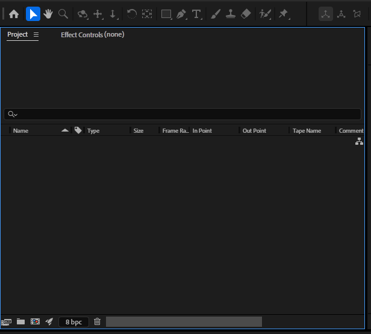
Composition: изображение сцены
Панель Composition показывает активную композицию в текущий момент времени. Здесь мы видим результат сочетания слоёв, выделяем объекты и контролируем композицию кадра. Настройки просмотра помогают рассмотреть изображение и быстрее выполнять предварительный просмотр.
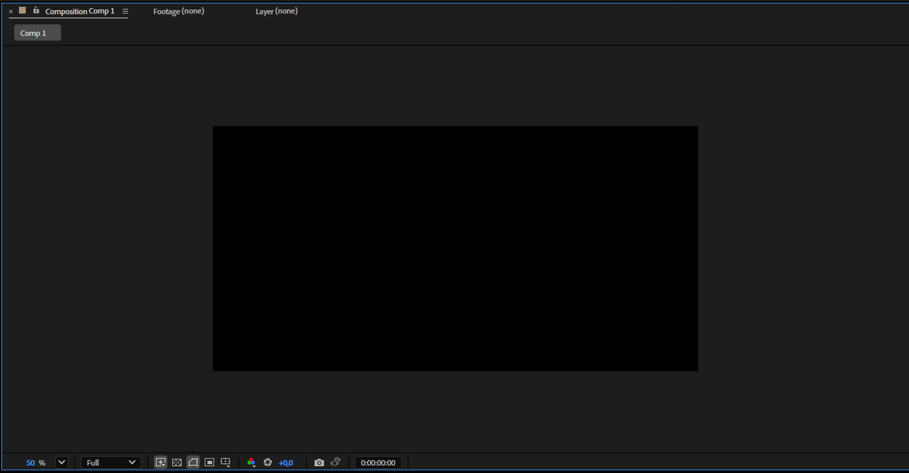
Timeline: слои и время
В левой части Timeline находятся слои и их свойства. В правой части показано время, длительность слоёв и ключевые кадры. Вертикальный порядок слоёв определяет порядок наложения: в обычной 2D-композиции верхний слой перекрывает нижний там, где он непрозрачен. По горизонтали мы располагаем события во времени.
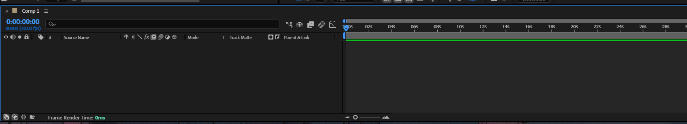
Effects & Presets и инструменты
В панели Effects & Presets ищут эффекты и готовые наборы анимационных настроек. После применения эффекта его параметры можно редактировать в Effect Controls. Не стоит начинать работу с перебора эффектов: сначала определите нужное поведение изображения.
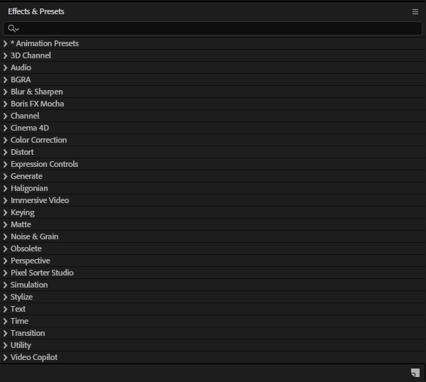
Панель инструментов содержит выделение, перемещение, работу с точкой привязки, создание текста, фигур и другие инструменты. Горячие клавиши ускоряют работу, но важно понимать, какой инструмент сейчас активен.
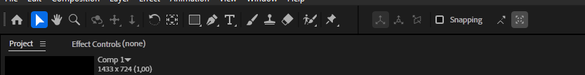
Слои: из чего собирается композиция
Создать новый слой можно через Layer → New или контекстное меню Timeline. Тип слоя выбирают по задаче. Основные виды:
| Слой | Назначение |
|---|---|
| Text | Текст, оформление надписей и текстовая анимация |
| Solid | Однотонная поверхность, фон или основа для некоторых эффектов |
| Shape Layer | Векторные фигуры, контуры и их параметры |
| Footage layer | Слой на основе импортированного изображения, видео или звука |
| Null Object | Невидимый управляющий объект для связей и общей трансформации |
| Adjustment Layer | Слой с эффектами, действующими на нижележащие слои в области его влияния |
| Camera | Камера для просмотра 3D-сцены |
| Light | Источник света для подходящих элементов 3D-сцены |
Камера и свет не превращают обычные 2D-слои в объёмные объекты. Их работа зависит от 3D-настроек, выбранного режима рендеринга и свойств элементов. На этом занятии достаточно работать с обычными визуальными 2D-слоями; 3D рассмотрим отдельно при необходимости. Называйте слои по роли: Background, Title, Circle. Следите за их порядком и границами по времени. Если объект не виден, сначала проверьте видимость слоя, его длительность, положение и непрозрачность.
Свойства Transform
У обычных визуальных 2D-слоёв есть группа Transform. Камеры, источники света и некоторые вспомогательные слои имеют другой набор свойств. Для основных параметров используются короткие клавиши:
| Параметр | Клавиша | Что меняется |
|---|---|---|
| Anchor Point | A | Точка, относительно которой выполняются вращение и масштабирование |
| Position | P | Положение слоя в композиции |
| Scale | S | Масштаб по осям, обычно в процентах |
| Rotation | R | Поворот слоя |
| Opacity | T | Непрозрачность: 0% скрывает изображение, 100% показывает его полностью |
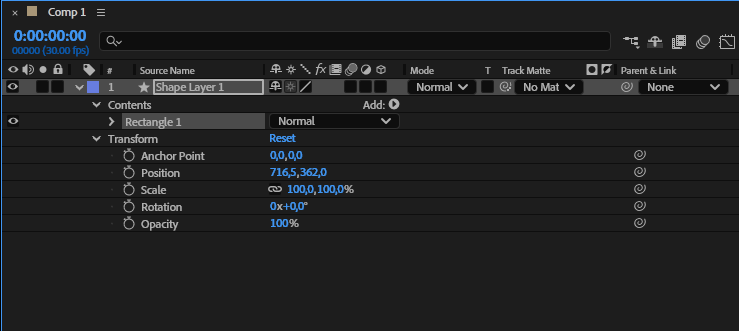
Position отвечает за положение слоя в композиции, Anchor Point за опорную точку внутри слоя. Если переместить опорную точку, вращение и масштабирование будут восприниматься иначе. Сначала проверьте её положение, затем настраивайте движение.
У Shape Layer могут быть дополнительные группы Transform внутри Contents. Они управляют отдельными фигурами или группами. Не путайте их с Transform всего слоя: в следующей лекции мы подробнее разберём устройство шейпов.
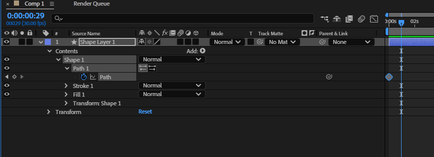
Первая анимация с ключевыми кадрами
Ключевой кадр хранит значение свойства в конкретный момент. Между ключевыми кадрами After Effects рассчитывает промежуточные значения. Для простой анимации положения нужно задать как минимум два разных значения в разные моменты времени.
- Создайте круг или текстовый слой в композиции First_motion.
- Выделите слой и нажмите P, чтобы открыть Position.
- Переместите указатель времени на начало композиции.
- Поставьте объект в начальную позицию и включите секундомер у Position. Появится первый ключевой кадр.
- Переместите указатель времени на 2 секунды.
- Измените Position, задав конечную позицию. При включённом секундомере появится новый ключевой кадр.
- Вернитесь к началу и запустите предварительный просмотр.
Если изменить значение, не переместив указатель времени, вы отредактируете тот же момент, а не создадите новое движение. Если выключить секундомер у анимированного свойства, его ключевые кадры удаляются. Для временного отключения просмотра анимации не используйте секундомер как переключатель воспроизведения.
Easy Ease и Graph Editor
Сначала сравните равномерное перемещение и движение с плавным стартом и остановкой. Выделите нужные ключевые кадры и примените Keyframe Assistant → Easy Ease; стандартная клавиша F9. На некоторых клавиатурах потребуется Fn + F9.
Easy Ease меняет характер изменения скорости около ключевых кадров. Это не отдельный «тип графика» и не универсальная кнопка хорошей анимации. Иногда резкий старт, линейное движение или жёсткая остановка лучше подходят задаче.
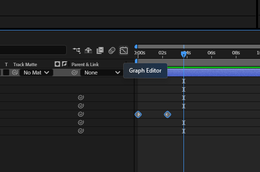
Откройте Graph Editor и выберите нужное свойство. В нём есть два важных вида графиков:
- Value Graph показывает значение параметра во времени. Для Position это положение по выбранной координате.
- Speed Graph показывает скорость изменения параметра. Пик кривой означает более быстрое изменение, а значение около нуля медленное изменение или остановку.
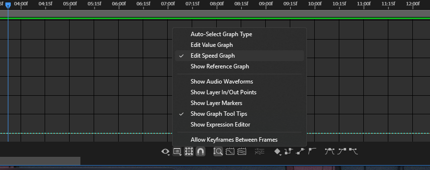
В графике скорости горизонтальная ось соответствует времени. Вертикальная показывает скорость изменения выбранного параметра; единицы зависят от самого свойства. У Position это пиксели в секунду, у Scale проценты в секунду.
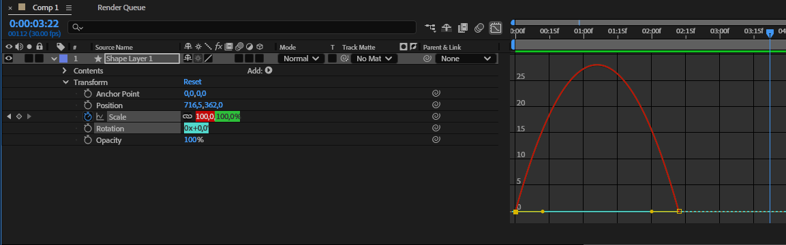
Начните с простого изменения скорости между двумя ключами. Если график выглядит иначе, проверьте выбранное свойство и режим Value Graph или Speed Graph. Не ориентируйтесь на номер кнопки в интерфейсе: положение элементов может отличаться между версиями.
Проверка проекта и практика
- Создайте композицию 1920 × 1080, 30 fps, длительностью 5 секунд.
- Добавьте фоновый Solid, текст и одну простую фигуру.
- Дайте слоям понятные названия и проверьте порядок наложения.
- Анимируйте Position фигуры двумя ключами.
- Сравните исходное движение и вариант с Easy Ease.
- Измените Anchor Point и проверьте, как он влияет на поворот.
- Сохраните проект и убедитесь, что связанные материалы доступны.
Перед завершением проверьте: объект виден в нужное время, текст читается, фон создан отдельным слоем, анимация изменяется между ключевыми кадрами. Если воспроизведение тормозит, попробуйте снизить разрешение предпросмотра; это не причина сразу менять FPS проекта.
В следующей теме перейдём к импорту, маскам, устройству шейпов и выражениям. Здесь важно освоить основу: композиция, слой, свойство, время и ключевой кадр.
Русскоязычная справка Adobe: композиции, рабочие среды и панели, интерполяция ключевых кадров.